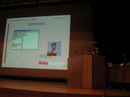

VisualuRuby計画(仮称)によるWindowsでのGUI開発 （nyasu）
- スピーカー
- nyasu - 日本Rubyの会
- プロフィール
- 趣味のプログラマ。活動時間は深夜と休日です。
- 講演時間
- 15：00〜15：15
- 講演者による資料
- http://www.osk.3web.ne.jp/~nyasu/vruby/rubykaigi2007/
http://www.osk.3web.ne.jp/~nyasu/vruby/rubykaigi2007/rk2007vr-3.pdf
VisualuRuby計画(仮称)とは
WindowsのみのGUIライブラリ。ウインドウなどをクラス化して寿命の管理やAPIの提供をする。また、イベントの配送もする。
開発環境っぽくしたい場合は、FormDesingerと好きなエディタを使う。
nyasuさんほか4名の開発者。
歴史
クリスマスのよるにもやっていたり。
2000年までに実験的な部分をおえて、2001年から拡張的なフェーズに。 現在はおちついている。
デスクトップマスコット ruby-chanなど。MDD (mascot駆動開発)!
線も書けますよ。ツリービューもできますよ。ActiveXも使えます。
特徴と使いかた
イベントの受信方法に特徴がある。VisualBasic的なイベントハンドラが定義される。ハンドラはFormオブジェクトのメソッドとして定義する。btn1が押された時のハンドラはbtn1_clickedという名前。
長所短所
長所
- 昔のWindows APIと相性が良い
- 拡張容易
- Windowsで使える他のライブラリが使える
- MediaPlayer
- Scintilla
- Cairo
- 環境構築や配布が容易
- 他のDLL等が不要
- FormDesignerがある (雪見酒さん作)
- VBのようにペタペタ貼り付けられる (ここでデモがありました)
短所
- メソッドの命名が混乱している
- アンダーバー、大文字小文字…
- 定数やAPIのラップが不十分
- たくさんあるので網羅していられません
- レイアウトマネージャが弱い
- FormDesignerがあるじゃないですか！
- GUIコンポーネントが古い
- 取り込みは容易なので適宜拡張してください
- ActiveXは使えます
将来
- インストール数は増加
- 著名ライブラリに同梱
- Win32のAPI依存
- しばらくは残るだろう
- .NetやWeb上のGUIに移行？
vrubyを使う人は、GUIが必要な人とは違う感じ。exerbやrubyscript2exeを利用している人が多いように思われる。
代替のものはまだないので、これからも時々は必要になるかもしれません。


Keyword(s):
References:[RubyKaigi2007速報ログ]